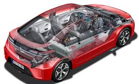
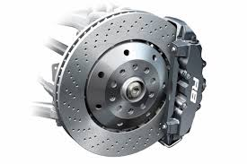

Blog.

El término automóvil (del griego αὐτο "uno mismo", y del latín mobĭlis "que se mueve") se utiliza por antonomasia para referirse a los automóviles de turismo.[1] En una definición más genérica, se refiere a un vehículo autopropulsado destinado al transporte de personas o mercancías sin necesidad de carriles.[1] Existen diferentes tipos de automóviles, como camiones, autobuses,[2] furgonetas,[3] motocicletas,[4] motocarros o cuatriciclos.

Un motor es la parte sistemática de una máquina capaz de hacer funcionar el sistema, transformando algún tipo de energía (eléctrica, de combustibles fósiles, etc.), en energía mecánica capaz de realizar un trabajo. En los automóviles este efecto es una fuerza que produce el movimiento. Existen diversos tipos, siendo de los más comunes los siguientes:

Un freno es un dispositivo utilizado para detener o disminuir la velocidad de algún cuerpo, generalmente, un eje, Eje de transmisión o tambor. Los frenos son transformadores de energía, por lo cual pueden ser entendidos como una máquina per se, ya que transforman la energía cinética de un cuerpo en calor o trabajo y en este sentido pueden visualizarse como “extractores“ de energía. A pesar de que los frenos son también máquinas, generalmente se les encuentra en la literatura del diseño como un elemento de máquina y en literaturas de teoría de control pueden encontrarse como actuadores.